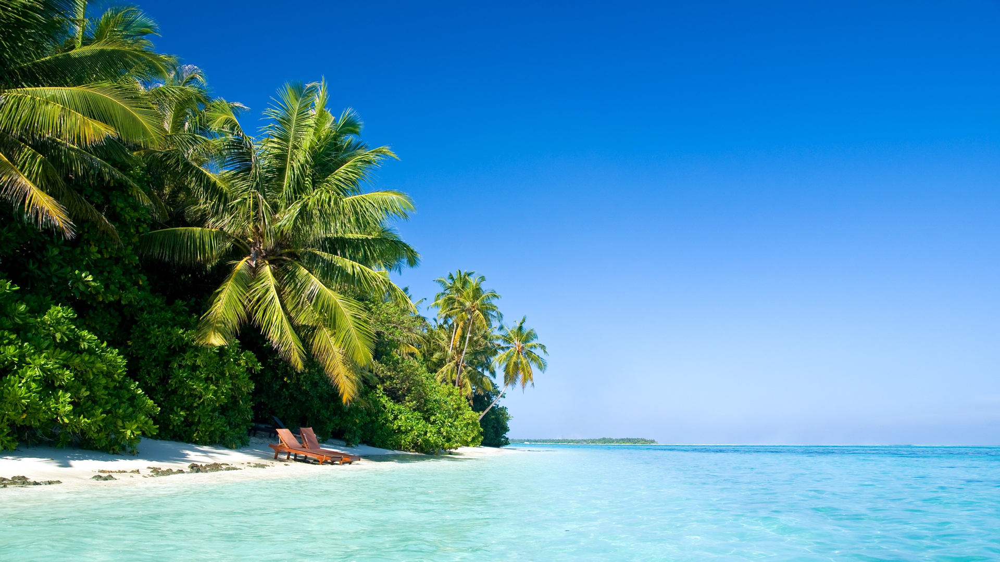

Что такое океан?
Океан (также море или мировой океан) - это водоем соленой воды, который покрывает
примерно 70,8% поверхности Земли и содержит 97% земной воды. Другое определение - "любой из больших водоемов, на которые делится великий океан". Отдельные названия
используются для обозначения пяти различных районов океана: Тихого (самого большого), Атлантического, Индийского, Южного (Антарктического) и Арктического (самого маленького).
Мировой океан — глобальный объём морской воды, основная часть гидросферы, составляющая 94,1 % всей её площади, непрерывная, но не сплошная водная оболочка Земли,
окружающая материки и острова и отличающаяся общностью солевого состава. Континенты и большие архипелаги разделяют мировой океан на части (океаны).
Большие регионы океанов известны как моря, заливы, проливы и т. п.
Но куда более впечатляющим становится этот отдых, если пляж оказывается на берегу океана. Словами сложно объяснить, чем отличается
отдых на берегу океана от отдыха на море. Песок и кромка воды, конечно, похожи, но в океане вода свежее, ветер сильнее, а просторы масштабнее.
Индийский океан
Третий по площади и глубине океан Земли, составляющий около 20 % её водной поверхности. Его площадь — 76,174 миллионов км², объём — 282,65 млн км³. Самая глубокая точка
океана находится в Зондском жёлобе
Мальдивы: пляжи Banyan Tree, Cocoa Island, Nika и Soneva
Туристы, добравшиеся до Мальдив, получают возможность отдохнуть на одном из почти ста необитаемых крохотных островков в Индийском океане. Эти места славятся не только
хорошими пляжами, но и замечательными условиями для снорклинга и дайвинга в водах океана. Никаких культурно-исторических достопримечательностей здесь нет, но для
спокойного или романтического отдыха эти места идеальны. Отметим, что загорать топлес или обнаженными на Мальдивах категорически запрещено.Пляж и море для многих
воплощают идеальное место отдыха.
Атлантический океан
Атлантический океан — второй по величине и глубине океан Земли после Тихого океана, расположенный между Гренландией и Исландией на севере, Европой и Африкой на востоке,
Северной и Южной Америкой на западе и Антарктидой на юге. Площадь 91,66 млн км², из которых около 16 % приходится на моря, заливы и проливы. Площадь прибрежных морей
невелика и не превышает 1 % от общей площади акватории.
Алгарве, Португалия: пляжи Ilha de Tavira, Albufeira и Lagos
Атлантические берега Португалии омываются манящими водами океана с одной стороны и шумом портовых городов — с другой. Пляжи песчаные и ухоженные
(читайте также: Угадайте, где находится пляж — на зарубежном курорте или в России).
Таблица размерности океанов
|
Океан
|
Площадь,млн км²
|
Объем,млн км³
|
|
Индийский
|
76,17
|
282,65
|
|
Атлантический
|
91,66
|
329,66
|